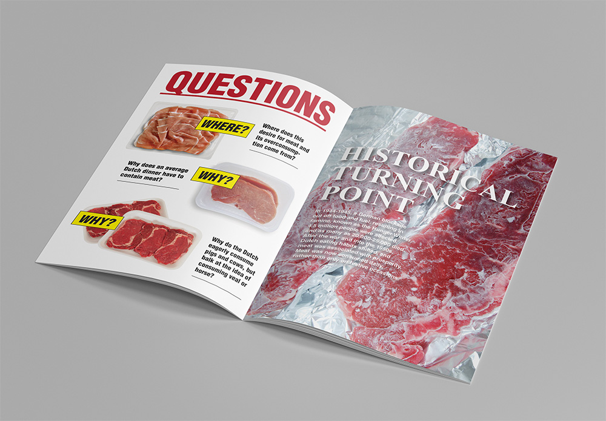
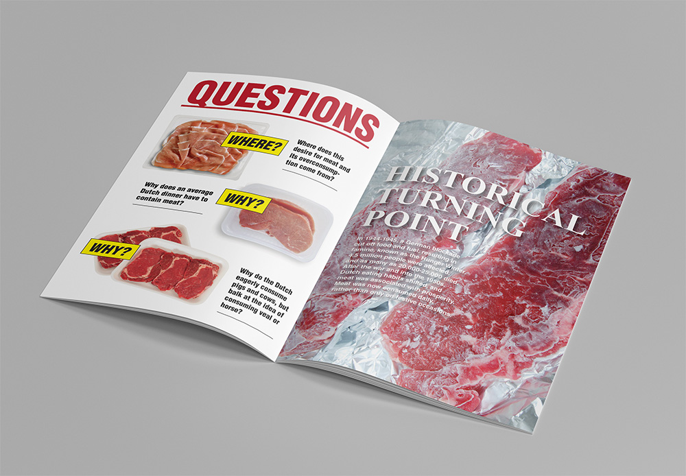

Command+S This Publication — Notes on the Design and Development of the HP Research Awards Series
The HP Research Awards

In 2015, the Willem de Kooning Academy launched an award for 'art and design as critical research'. The award is meant to give exposure to the most valuable "experimental and critical research in form of art and design projects". Besides three different monetary prizes, the award includes the publication of the winning projects within a dedicated series. This publication process is meant to reflect the idea that art and design can be research endeavors per se, thus not merely function as the expression, embellishment or structuring of previous research. The publication process becomes an opportunity to investigate experimental techniques and methods both in print and in electronic form. The HP Research Awards series is a form of publication as research.

Some of the awarded projects are also included in The Art School Reinvented, a web-to-print publication showcasing exemplary autonomous, commercial and social projects by recent graduates. The publication, that can be continuosly expanded, was designed and developed by Template (Marlon Harder and Lasse van den Bosch Christensen).
Goals: Visuality, Materiality and Accessibility
For the 2016 edition of the WdKA HP Research Award, we were asked to develop three hybrid publications of the winning graduation projects. The goal was to emphasize the visual and material aspects of the hybrid publishing approach, thus striving on the one hand or experimental visual and material outputs and on the other creating a recognizable research publication series that could be easily accessed, shared and archived.
Two Versions: Standard and Custom
We summarized this brief by defining a double focus on visuality/materiality and accessibility. In order to address these needs, we conceived an hybrid publication made of two interrelated versions: a standard one and a custom one. The standard version is meant to respond to the following criteria:
- consistency
- accessibility
- archiving
The custom version is meant to address the following ones:
- specificity (a specific form reflects a specific content)
- visuality/materiality
- interactivity (broadly speaking, e.g. non-trivial ways to navigate a printed publication)
For the standard version we decided to use an electronic format, thus taking advantage of the modularity of code and its templating possibilities. Complementary to that, we opted for a printed custom version characterized by specifically designed visual and haptic qualities.
The Perils of EPUB
When it comes to choose a format for an e-publication, EPUB might seem the obvious choice since accessibility is a core issue:
"A key concept of EPUB is that content presentation should adapt to the User rather than the User having to adapt to a particular presentation of content"
In other words, instead of imposing its features, an EPUB file tries to do its best in each possible situation, from narrow E Ink readers to multi-touch tablets. Furthermore, its inner architecture is crystal clear and easily accessible.
Despite this, we weren't sure EPUB would actually fit the criteria of accessibility.
We found that the unhandiness, fragmentation and inconsistencies of the ecosystem surrounding the EPUB format hinders accessibility. This concerns both the tools to create EPUBs (Calibre, Sigil, InDesign etc.) and the ones to read them (iBooks, Adobe Digital Editions, etc).
This is particularly true when it comes to ebooks with peculiar designs, since the absence of a respected standard among reading software requires a series of hacks to create the most basic layouts.
EPUB means frustration. Both for the developer, the designer and the reader.
Silvio could experience this directly by giving a series of workshops, together with interaction designer Jacopo Pompilii, entitled The Mobile is the Massage. The goal of the workshop was to actively interpret the peculiar graphic solutions of self-reflexive artists' books and heavily visual ones in order to produce an EPUB specifically designed for mobile devices.
A frequent sight while developing EPUBs. (source)
This state of affairs reminded us of a previous project of the WdKA entitled I Would Rather Design a Poster Than a Website. Similarly, many people that might be interested in the HP Research Award series (students, teachers etc.) would rather read a PDF or an online publication than an EPUB.
CMD+S this Publication
One of the main advantages of EPUB is that incorporates all the elements of an electronic publication (images, videos, structure) within a single file. This is generally not the case with HTML since images, scripts and the like are externally linked. However, it is possible to store images, videos and any type of file within an HTML file by encoding them as Base64 strings of text (one of the oldest ways to encode elements into HTML). Thanks to this, it is possible to create a publication consisting of a single HTML file that includes semantic HTML5 structure, minimal JS navigation, CSS styles and multimedia content. This self-sufficient HTML file can be easily saved from the browser (CMD+S/CTRL+S), shared and archived.
Streamlining the Process
Since the publications follow a more or less rigid template, we used Pug.js for generating the HTML and Sass for the CSS. We found particularly valuable the possibility of inserting Markdown text into Pug templates thanks to Pug filters.
Inspired by pandoc's '--self-contained' module, we wrote a Python script able to encode in Base64 favicon, CSS styles, images, videos, audios, scripts, background images and fonts.
The full repository can be found here.
Meta-Archiving
The electronic standard version also functions as a form of 'meta archiving': it includes photographic documentation of the custom version and a brief text explaining the related design choices. In this sense, the two version are interrelated in a sort of hybrid mise en abyme.
Custom Versions
 
Meat Market by Daisy Tijssen
Designed as a commercial leaflet, the publication presents all the numbers and facts of the research alongside stock images. Mimicking the way meat is presented to us. Just as the research this publication is meant to be read in no particular order.
Living Light by Ermi van Oers
The idea of the printed version was to give it a warm and natural appearance. The story of the Living Light is told trough Ermi’s text and many photographs. The quotes in the booklet give an insight in Ermi’s thoughts and motivation. The included schematics make this publication also interesting for readers curious of the technical aspects of the project.

Crangon Crangon by Jade Ruijzenaars
The publication is divided in two parts, the text is accompanied by photographs of Jade’s ceramic research. The second part consists of illustrations and schematics. The clean, typographic approach gives space for the aesthetic qualities of her practical research. The different covers emphasize the uniqueness of each ceramic experiment.